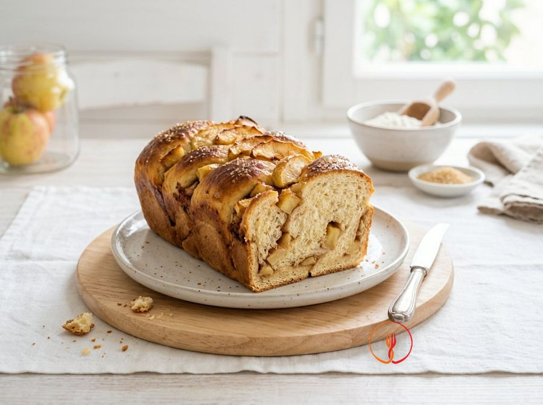

Pane Dolce alle Mele e Cannella
Un lievitato soffice e profumato, perfetto per iniziare la giornata con l'aroma delle mele cotte. Gli ingredienti sono semplici ed economici, tipici della dispensa italiana media.
Un lievitato soffice e profumato, ideale per una merenda fatta in casa o una colazione autunnale. La dolcezza delle mele Golden si sposa con l'aroma avvolgente della cannella in un impasto morbido.
Ingredienti
- Farina 00300 g
- Mele Golden2 pz
- Zucchero di canna80 g
- Latte intero120 ml
- Burro50 g
- Lievito di birra secco4 g
- Cannella in polvere5 g
- Sale1 g
Allergeni
Glutine, Latte
Procedimento
- Inizia scaldando 120ml di latte intero finché non diventa tiepido (circa 30-35°C), poi scioglici dentro 4g di lievito di birra secco e un cucchiaino preso dagli 80g di zucchero di canna. Mescola delicatamente con un cucchiaino e lascia riposare il composto per circa 10 minuti in un angolo riparato della cucina, lontano da correnti d'aria. Vedrai formarsi una leggera schiuma in superficie: questo è il segnale visivo che il lievito è attivo e pronto per far crescere il tuo pane. Il consiglio dello chef: non scaldare mai troppo il latte, poiché una temperatura superiore ai 45°C neutralizzerebbe il lievito, impedendo all'impasto di lievitare.
- In una ciotola capiente, setaccia 300g di farina 00 e uniscila al resto dello zucchero di canna, 5g di cannella in polvere e 1g di sale. Usa una frusta a mano per distribuire uniformemente gli aromi e lo zucchero all'interno della farina, assicurandoti che non ci siano grumi. Sentirai subito il profumo intenso della cannella che inizia a sprigionarsi non appena si mescola con la farina. Il consiglio dello chef: il sale non deve mai toccare direttamente il lievito fresco, quindi mescolarlo accuratamente alla farina è il modo migliore per proteggere la capacità lievitante del composto.
- Crea una fontana al centro degli ingredienti secchi e versa il mix di latte e lievito insieme a 50g di burro precedentemente fuso e intiepidito. Impasta energicamente a mano o con l'aiuto di una planetaria per almeno 10 minuti, applicando una pressione costante per sviluppare correttamente la maglia glutinica. Dovrai ottenere un panetto liscio, elastico e che si stacchi completamente dalle pareti della ciotola. Il consiglio dello chef: se l'impasto ti sembra inizialmente troppo appiccicoso, resisti alla tentazione di aggiungere subito altra farina; la lavorazione costante attiverà le proteine rendendolo lavorabile.
- Mentre l'impasto riposa un istante, sbuccia le 2 mele Golden e tagliale a cubetti regolari di circa 1 centimetro di lato. Asciuga leggermente i cubetti con della carta assorbente per eliminare l'umidità in eccesso che potrebbe rendere l'impasto troppo molle in cottura. Questa dimensione è ideale per far sì che la frutta si distribuisca omogeneamente senza appesantire eccessivamente la struttura del pane. Il consiglio dello chef: prediligi le mele Golden perché mantengono bene la loro dolcezza naturale e la forma anche dopo una lunga cottura in forno.
- Allarga l'impasto sulla spianatoia, distribuisci i cubetti di mela sulla superficie e ripiega l'impasto su se stesso più volte per incorporarli. Lavoralo con gesti delicati ma decisi per distribuire la frutta uniformemente, cercando di non schiacciare troppo i pezzi di mela per preservarne la consistenza. L'impasto risulterà ora più irregolare e leggermente umido al tatto, caratteristica tipica di questa preparazione rustica. Il consiglio dello chef: se le mele faticano a legarsi all'impasto, infarinale leggermente prima di aggiungerle per facilitare l'adesione.
- Ungi leggermente una ciotola con un velo di burro, adagia il panetto e coprilo con un panno di cotone pulito e leggermente inumidito. Lascia lievitare in un luogo tiepido (ideale il forno spento con la luce accesa) per circa 2 ore o finché il volume non sarà visibilmente raddoppiato. Al termine, l'impasto dovrà apparire soffice, gonfio e sprigionare un delicato profumo di lievito e cannella. Il consiglio dello chef: la pazienza è fondamentale, una lievitazione lenta e costante garantisce un pane più digeribile e una mollica molto più soffice.
- Trascorse le 2 ore, sgonfia l'impasto premendo delicatamente con la punta delle dita e trasferiscilo in uno stampo da plumcake foderato con carta forno. Modella la superficie per renderla omogenea e copri nuovamente per la seconda lievitazione che dovrà durare circa 30 minuti in un luogo protetto. Questo passaggio serve a ridare forza al lievito dopo lo stress della manipolazione, assicurando uno sviluppo ottimale in forno. Il consiglio dello chef: non pressare troppo l'impasto nello stampo, lascia che si adatti naturalmente allo spazio per non perdere le bolle d'aria create.
- Preriscalda il forno in modalità statica a 180°C e, subito prima di infornare, spennella la superficie del pane con un cucchiaio di latte a temperatura ambiente. Posiziona lo stampo sul ripiano centrale e cuoci per 35-40 minuti, monitorando costantemente il colore della crosta che dovrà diventare bruno-dorata e lucida. Per verificare la cottura interna, usa uno stecchino di legno: dovrà uscire completamente asciutto una volta estratto dal cuore del pane. Il consiglio dello chef: se vedi che la superficie scurisce troppo velocemente, coprila con un foglio di alluminio negli ultimi 10 minuti di cottura.
- Una volta sfornato, togli immediatamente il pane dallo stampo e posizionalo su una gratella per dolci per permettere all'aria di circolare anche sul fondo. Lascialo raffreddare completamente prima di affettarlo: questo tempo è essenziale affinché l'umidità delle mele si stabilizzi all'interno delle fibre. Otterrai un pane dolce profumatissimo, con una crosticina fragrante e un interno morbidissimo arricchito dai pezzi di frutta. Il consiglio dello chef: conserva il pane ormai freddo avvolto in un canovaccio o in un sacchetto di carta per mantenerlo morbido fino a 3 giorni.
Consigli
- Assicuratevi che il latte sia tiepido e non bollente per non compromettere l'azione del lievito.
- Infarinate leggermente i cubetti di mela prima di aggiungerli all'impasto per evitare che affondino sul fondo.
- Conservate il pane dolce sotto una campana di vetro per preservarne la morbidezza per più giorni.
Varianti
- Potete sostituire le mele Golden con le Renette per un gusto leggermente più acidulo.
- Spolverizzate la superficie con altro zucchero di canna prima di infornare per una crosticina croccante.
Valori nutrizionali (stima)
| Per porzione (181 g) | Per 100 g | |
|---|---|---|
| Energia | 2000 kJ / 478 kcal | 1105 kJ / 264 kcal |
| Proteine | 8.5 g | 4.7 g |
| Carboidrati | 80.2 g | 44.3 g |
| di cui zuccheri | 29.5 g | 16.3 g |
| Grassi | 11.3 g | 6.2 g |
| di cui saturi | 7.6 g | 4.2 g |
| Fibre | 2.8 g | 1.5 g |
| Sale | 0.25 g | 0.1 g |
Valori stimati con l'AI su dati medi CREA / USDA: sono indicativi e non sostituiscono il parere di un medico o di un nutrizionista.
Apri la ricetta nell'app per la lista della spesa, le schede ingredienti e i negozi vicini.